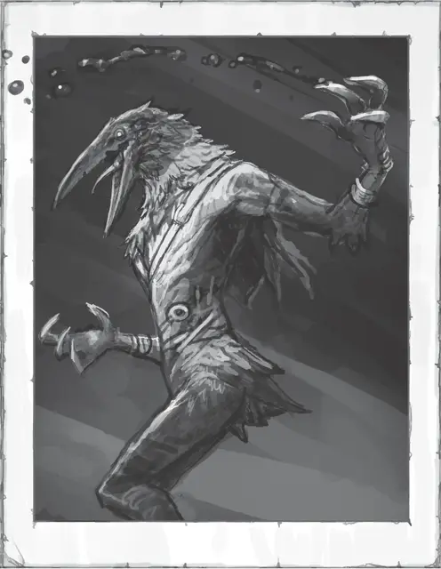

Свирепый корби
Dire Corby
Средний Гуманоид (Жутевран), нейтрально-злой

Класс Доспеха 13 (природный доспех)
Хиты 16 (3к8 + 3)
Скорость 40 футов, лазая 40 футов
| мод | спас | ||
|---|---|---|---|
| СИЛ | 13 | +1 | +1 |
| ЛОВ | 14 | +2 | +2 |
| ТЕЛ | 13 | +1 | +1 |
| мод | спас | ||
|---|---|---|---|
| ИНТ | 6 | −2 | −2 |
| МДР | 8 | −1 | −1 |
| ХАР | 7 | −2 | −2 |
Навыки Акробатика +4, Восприятие +3
Чувства тёмное зрение 60 футов, пассивное Восприятие 13
Языки Подземный
Опасность 1/2 (100 опыта)
Бонус мастерства +2
Особенности
Жуткая какофония. Любое существо отличное от свирепых корби, начинающее ход в пределах 60 футов от свирепого корби и слышащее его, должно совершить спасбросок Мудрости Сл 11. При провале, существо до начала своего следующего хода не может карабкаться, совершать Рывок, и накладывать заклинания сложнее заговоров.
Острый слух. Свирепый корби совершает с преимуществом проверки Мудрости (Восприятие), полагающиеся на слух.
Действия
Мультиатака. Свирепый корби совершает две атаки Когтем.
Коготь. . Рукопашная атака оружием: +4 к попаданию, досягаемость 5 фт., одна цель. Попадание: 6 (1к8 + 2) рубящего урона.
Описание
Оповещающие зловещим, глубоким гулом своей странной песни, огромные стаи свирепых корби разносятся по всему Подземью, лишая туннели и пещеры, через которые они проходят, всего живого. Даже самые могущественные существа Подземья прячутся в укрепленных логовах или отступают в сторону от стаи свирепых корби, зная, как причудливая песня этих существ сбивает с толку, дезориентирует и в конце концов ошеломляет их добычу.
Роковые стаи. Свирепые корби бродят по Подземью огромными стаями, следуя предсказуемым маршрутам передвижения, подобно перелетным птицам. Они очищают местность от лишайников, грибов и паразитов, составляющих их рацион, прежде чем перейти к новым кормовым угодьям. Путешественники в Подземье ценят точные карты, иллюстрирующие передвижение этих стай, поскольку, отставая от них на день, можно быть уверенным, что свирепые корби уничтожат множество монстров и других угроз.
Жуткие песни. Обитатели Подземья слышат приближение стаи свирепых корби задолго до того, как они появляются в поле зрения. Во время путешествия эти существа улюлюкают, чирикают и воют, создавая сводящую с ума какофонию. В их песне есть странный магический подтекст, из-за которого у тех, кто её слышит, кружится голова, из-за чего невозможно двигаться с большой скоростью или карабкаться по стенам пещер. У заклинателей кружится голова, и они не могут использовать ничего, кроме своей простейшей магии. Из-за дезориентирующей песни свирепых корби бесчисленные существа Подземья и путешественники не могут спастись бегством, когда эти монстры обрушиваются на них.
Странный эскорт. Некоторые исследователи Подземья, которых одни считают изобретательными, а другие — сумасшедшими, научились путешествовать среди свирепых корби. Заткнув уши, чтобы избежать эффекта от пения стаи, эти путешественники пытаются подражать странному уханью и щебетанию свирепых корби, и благодаря простодушию этих существ добиться успеха на удивление легко. Принятый в стаю, путешественник может путешествовать по Подземью в сопровождении сотен человекоподобных существ, которых другие хищники глубин стараются избегать.
Невольные исследователи. Когда старые тропы становятся непроходимыми или стая терпит большие потери в определенном районе, свирепые корби иногда прокладывают новый маршрут миграции. В зависимости от их нового маршрута, толпа этих существ может появиться в подземелье, соединяющем Подземье и поверхностный мир. Свирепствуя в таких подземельях, стая часто вынуждает своих чудовищных обитателей спасаться бегством в более безопасные логова. Когда они неизбежно появляются на поверхности, ненасытные аппетиты свирепых корби заставляют их быстро уничтожать свою новую среду обитания, включая любые близлежащие поселения.